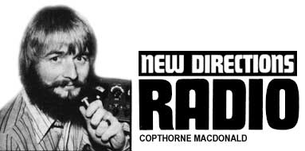

Alternatives-oriented radio amateurs have been finding one another as a result of the recent announcements and articles in MOTHER, LIFESTYLE! and elsewhere. We already have some activities going, and we're working to get several others underway.
Another pleasant outcome of New Directions is the number of folks who've written to tell me of their plans to study for ham licenses. For such individuals (maybe you're one of them!) I'll complete-in this column-a review of available instruction material for the code and theory portions of the tests, in the hope that this information will help you get that permit a little faster.
First, though, let's look at some of the on-the-air events currently going, and those planned for the future as I write this. (Remember, if you find a friendly ham near you it's possible to get involved with these doings even if you don't have your own license.)
The Roundtable-a scheduled on-the-air rap session-has been meeting Sunday afternoons since mid-September (on 14253 KHz at 4:00 p.m. EDT, and again on 7163 KHz at 6:30).
The focus of our discussions has been on personal growth, and on the problems faced by our country and the world. One meeting was a review of the MIT computer study, The Limits to Growth. We've had several sessions on the energy crisis and alternative sources of energy, and we've talked about what's wrong with the work/job/employment scene today. Wilderness living, astrology and the psychological theories of Abraham Maslow are still other examples of Roundtable topics.
One Sunday we reviewed I'm OK: You're OK and phone-patched a psychologist into the group to answer our questions about transactional analysis. Another Sunday, Jack Miller, editor and publisher of the North Country Anvil (an exciting change-oriented magazine ... $4.50 a year from P.O. Box 252, Millville, Minnesota 55957), had a two-hour rap with a conservative newspaperman in Massachusetts, to the enjoyment and enlightenment of a coast-to-coast audience.
In fact-although the Roundtable gives alternatives-minded people a chance to share ideas on a great many subjects-one of its most exciting aspects is its mixed attendance (including some tradition-oriented members and even an occasional fascist). This diversity gives us all valuable practice in communication. Fuzzy thinking and fuzzy talking may get you a "Right on!" from your friends ... but if you hope to reach the hard hat or the conservative businessman, you need to think crisply, drop the rhetoric and use the vocabulary and experiences of the person you're addressing.
Although most of our communicating during these get-togethers is by voice, slow-scan TV is used to some extent and adds a visual dimension for those who have the equipment. The slow-scan photos with this article are examples of information that was better handled visually than by verbal description.
The ancient practice of informally sharing what you know with those who want to learn reached a low point when formal schooling was at its peak a few years ago. In the recent shift away from schools to educational alternatives, however, there has been a rebirth of interest in this fundamental type of educational transaction. In Deschooling Society Ivan Illich speaks of providing "all who want to learn with access to available resources at any time in their lives" and empowering "all who want to share what they know to find those who want to learn it from them."
Ham radio has great potential for facilitating this sort of sharing. For example, Dan Taylor is an organic gardening/photography/flying/ham radio freak who wants to share what he knows about these subjects. He's going to teach 11 courses" in gardening, darkroom procedures and aviation ground school on the air and by slow-scan. If you're interested, write to Dan at 2948 Betsy Way, San Jose, California 95133.
Ham radio can also be a valuable tool for the exchanges which are springing up to help the learners find the sharers and vice versa. Wes Thomas (a ham, W21KQ) published a list of 33 such networks in Issue No. 1 of his new publication Synergy Access-A Global Newspaper on Futuristic Communications and Net working, (This source of current info on far-out communication activities directed toward social change and personal growth is available for $5.00 a year from 606 Fifth Avenue, East Northport, New York 11731.)
One exchange Wes listed, SpectaCenter (10 Devonshire Road, Ypsilanti, Michigan 48197), is nationwide in scope and has a free WATS line (800-521-0410). You can call that number for information, or for forms that will allow you to get your own learning/sharing interests into the exchange process.
The Specta-Center people I've been in contact with-Bill Carroll and Kathryn Kirk-are excited about the possibilities of amateur radio for learners and sharers who would otherwise have to do their thing by mail, or at high cost on the telephone. Kathryn and Bill are writing an article for the amateur radio publications in an attempt to interest their readers in offering the use of their stations for this purpose. The communications between the individual student or instructor and the ham station could be by telephone "patched" into the radio rig.
For this system to work, an individual must be able to locate the hams near him. One way to do this is to contact the local amateur dub (located through the nearest chamber of commerce, or by writing the American Radio Relay League-the 100,000-member national ham organization, better known as ARRL-at 225 Main Street, Newington, Connecticut 06111). Then again-since hams are often employed in the electronics field-calls to TV service shops, radio and TV stations and electronic parts stores may bear fruit. Or, because amateur radio operators frequently provide valuable communication services during emergencies, the local civil defense organization may be able to put you in touch.
There is a publication that lists all the hams in the world: Radio Amateur Callbook Magazine (925 Sherwood Drive, Lake Bluff, Illinois 60044 . . many subscription and single-copy options). Unfortunately for us, the information is arranged-not by address-but alphabetically by call letters (which isn't much help) and spread out through several U.S. and foreign editions. The country is divided into ten geographical regions for the purpose of assigning call signs, and a search through one section of the U.S. book to find all the amateurs in a given community or area could take several hours.
What we need is a listing of hams indexed by town or zip code. The necessary raw material exists in the FCC computer tapes, and we're trying to work out some way of generating such a directory. With this information available, a learning exchange such as Specta-Center could not only send out the names of people to contact for the learning/sharing transaction ... but also the names and addresses of nearby hams who might be willing to provide free communication.
I'd also like to mention a couple of ideas that excite me very much, but which will take a lot of work to get launched.
The first is a radio linkup between alternatives people here and those who are doing good things in the Third World. We have a lot to share and, for a number of reasons, Latin America is probably the best place to start. If you're in contact with Central or South American friends who you think would like to get into some idea-sharing in general-and alternative-technology-sharing in particular-let me know.
The second is a "Health Hotline" through which isolated people anywhere in the world would have access to a medically knowledgeable person via ham radio in the event of accident or acute illness. This plan might really be effective only as part of a larger do-it-yourself diagnosis and treatment program. Perhaps kits of diagnostic and curative information and supplies could be created and put into the hands of many individuals. (Again, if you're into this sort of thing, please contact me.)
The possibilities I've mentioned as future developments for New Directions Radio are all examples of the single, big, overall service we can offer the alternatives movement. As I see it, our job is to speed communications among change oriented people ... not just for our own benefit, but for the welfare of the larger community.
We of the alternative culture can ignore the industrial society around us only at our own peril. First of all, as Peter van Dresser eloquently pointed out in LIFESTYLE! NO. 7, at the very minimum we're dependent on it for our tools. Second, while many talk about the disintegration of industrial society as a positive development, an abrupt collapse would destroy the alternative culture as well. There would be no dropping out from armed hordes of starving city people combing the countryside for food. The task before us is to save the world, not just ourselves ... for the two are inseparable. As Jim Stamper put it, "Alternatives have to be developed and implemented for millions of people living in urban centers if only to make alternatives possible for people living out in the country."
Is there enough time? We just don't know. There's a new sense of urgency in the air, and it's a damn sure thing that we don't have much time left. I'm inclined to agree with John Shuttleworth that the next 15 years "are going to make or break the planet".
It's vitally important that we use the time we do have as effectively as possible. Each freaky neighborhood has its own internal communication links, and the alternative press is doing an amazingly effective job of spreading the movement's message to an everincreasing group of people. What I feel is missing and needed is a web of fast-response, long-distance, multi-directional communication links to supplement those channels we already have.
The main problem in relying on magazines and newsletters for all our long-distance communicating is their lengthy information-cycling time. Even with individuals and groups (such as MOTHER's crew) pouring almost their entire lives into getting issues out as rapidly as possible, it's typically two months between the author's deadline and the time the reader gets his copy. It will probably then take another four months before the reader's comments on that article appear in print. We need to fill the spaces in time between these publishing events with lots of fluid dialogue.
From Jim Stamper's letter again: "I begin to see your passion for getting these alternative folks ... into using ham radio. The turnaround time on information for this movement is simply too slow if we are going to change the world before an industrial collapse or total catastrophe. Besides, there is a lot of time going into discovering fire and inventing the wheel."
Ham radio, the telephone and fast-turnaround letter writing are practical techniques that we can start using to cut the delays and increase the synergism in our communications. Yes, it will take more time, energy and bread than we've been putting into communicating so far, but I can't see any other hope for avoiding the big trouble down the pike.
If there are ways out of the world's current mess, they will be discovered or created by people with some awareness of the realities of our present situation. By establishing and perfecting communication links among these people, we greatly increase the chances of coming up with creative solutions.
We need a burst of creativity! In past eras these explosions have often originated in individual cities. Think about the Impressionist painters in Paris, for example. They all knew each other. They met, and rapped, and shared ideas and techniques. Our creative task is of a different sort, and our group is spread around the country and the world. We don't have a local coffee shop in which to gather every night, trade thoughts and stimulate each other's creativity ... but we do have communication tools that didn't exist in 1880.
As I write, a few strands of the necessary web of radio/telephone/correspondence links exist, and by the time you read this, a few more will have been added. Why not create your own strands and tie them into the web? How about starting with a letter to someone, on a subject you feel is damned important, with copies to six other people who might also be interested in what you have to say?
And why not start working toward your license, so you can join us on the air?
All Novice Class code and written exams are administered by volunteer ham examiners. Your examiner is any radio freak you can track down who holds a General, Advanced or Extra Class license; is at least 21 years old; and is willing to give you the test.
The Conditional Class exam which is identical in content to the General-is also given by a volunteer examiner. To qualify to take the Conditional test you must live more than 175 miles from the nearest city in which the FCC gives exams two or more times a year, or have a physician certify that you are unable to appear at an FCC examining point because of a physical disability.
The General, Advanced and Extra Class exams are given only by FCC examiners, in a total of 78 cities. In large centers, the tests are conducted every week ... in others, only two or four times per year.
Full information on exam procedures, as well as study questions and answers, is given in The Radio Amateur's License Manual published by AR R L, so I won't go into details. It's enough to say that-whether you take the exam at an FCC office or through a volunteer examiner-the code test comes first ... and only if you pass it do you get to try the written.
The written exam consists of multiple choice questions on FCC regulations and elementary radio theory. A grade of 74% is passing. I reviewed the two available license manuals in MOTHER NO. 24, and details of how to order them are repeated in my "Recommended" list with this article. I suggest you get both since they are inexpensive and answer the FCC's study questions in slightly different ways ... so that one version may get the concept across to you even though the other leaves you wondering. If you have some electronics background, these manuals may be all you need. Most other people will want additional material that goes deeper into explaining the various concepts.
I reviewed six books that claimed to prepare a reader for various exams. All the manuals contained some useful information, but a couple were too shallow and didn't always parallel the exam content. Others went very deeply into the theory of radio ... more deeply than necessary to pass the test. This, of course, is fine if you really want to get into the technical bag.
Only one guide, the Amateur Radio Theory Course published by AMECO, seemed just about right for someone whose major interest is passing an exam with minimum time devoted to study. Several hams have told me that they used it successfully to prepare for their tests.
The process of learning Morse code is akin to other mechanical learning exercises ... and will bring back fun memories of typing classes, multiplication tables, beginning Spanish and music lessons. In short, it's a drag. Like these other pains, however, it does yield to regular practice sessions. Stretches of little progress will be broken by incremental jumps ahead, and if you just keep practicing half an hour a day or so, you'll be up to 13 wpm (words per minute) in-at most-a few months.
The greater portion of your practice time will be spent listening to the code. While the FCC does require that you also send, this second skill generally comes easily and naturally once the sound patterns which make up the code characters have programmed the recognition patterns in your brain. Repetitive exposure to the signals while you try to conjure up the mental image of the appropriate letter is the best way to accomplish this programming.
There are many ways to learn code, and if you keep practicing, almost any of them will eventually bear fruit. Some are more efficient than others, though, and will lead you more directly to your goal. The following is my biased and partial view of the best approach. If you think you've found a better one, please pass it along. Unfortunately, each individual learns the code only once, which makes comparisons difficult.
First, forget all those pictures of dots and dashes on your Boy or Girl Scout code practice set. The code in the FCC tests is sent in the form of sound. The only visual factor we want is the mental image of the particular letter corresponding to the sound we've just heard. Converting from sound first to visual dot-dash patterns and then to the alphabet is a slow and cumbersome way to build up speed. If you've never heard code on the radio, it sounds like a series of "dits" and "dahs". Say "dahdidahdit" out loud, rapidly. That is roughly how the letter "C" sounds in Morse code. "Didahdahdit" is the letter "P".
I feel that the best way to learn code is by listening to individual letters sent at about the same 13 wpm rate the FCC will be using in the General Class test. Many code records and tapes start the beginner out v.e.r.y s-l-o-w-l-y by sending the dit/dah patterns stretched out in time. The dits and dahs then grow shorter as the speed is gradually increased. This places an unnecessary burden on the student since the tempo of the transmitted characters continually shifts. Why not start out by listening to each letter sent at 13 or 14 wpm? Slow average sending rates can still be achieved by leaving a longer interval between letters. Speed can be increased by reducing the "waiting time". With this scheme, the beginner-from the very start-hears the exact letter sounds he will hear in the General Class exam.
Fortunately, one of the six beginning code courses I reviewed uses this approach: It's the Pickering Radio CM-1, available on both reel-to-reel tapes and C-120 cassettes. This instruction package, however, goes up only to a 9 wpm average rate, and must be supplemented with faster practice material such as the CM-1 1/2 tape if you wish to prepare for the General Class test.
If you don't have any sort of tape recorder, the "Word Method" course on 33 rpm records is a possibility. This course "talks" you through the code learning procedure, and you start hearing short words sent at 13 wpm from the beginning. There is no written key to check your work, and the use of actual words might make undesirable memorization of practice material a little too easy, but the approach seems sound to me. It may in fact be the best system if you actually want to use the code for communicating, since it helps you deal mentally with whole words.
A brief comment on the other beginner's courses I reviewed. The Archer Code Course (Radio Shack Catalog No. 20-026) uses the "slowstart" method I don't like, and provides very little practice material. The Herman H. Smith Cassette (Lafayette Catalog No. 40-71007) starts the characters at 10 or 12 wpm-which is not bad-but is likewise short on practice material. The International Code Training System published by Howard Sams uses an intermediate visual step that seems -to me-undesirable. The AMECO Senior Code Course requires that you memorize spoken "dit/dah" patterns before using the records, rather than using recorded sound as the prime tool to help you with that memorization process.
Once you've learned the code alphabet, numerals and punctuation marks via code tapes or records, you can benefit from various types of supplemental practice. People learning the code together often send messages to each other in spoken dit/dahs. If you have an amateur band receiver, or a transceiver (transmitter and receiver in one unit), you can I isten to hams ... or to the code practice transmissions from ARR L's station, W1AW. (Write to ARR L for a current schedule.)
It's important to listen to (hams would say "copy") some ordinary words and sentences in code before taking the FCC exam. This is because the test will be in "plain language", not in "code groups" ... the nonsense combinations of letters the courses use to keep you from memorizing their practice material. I learned code by receiving groups only ... and being faced with ordinary English for the first time in the exam almost threw me, since I was tempted to read what I was writing.
It's also a good idea to get your skill up a few wpm faster than the test speed to compensate for nervousness and strange surroundings. The FCC examiner sends five minutes of code at 13 wpm, and you're required to have one continuous minute of perfect copy out of the five. If you make a mistake, then, forget it and go right on or you'll miss several characters. (I don't know how the exam is handled these days, but when I took the test we were allowed a little time at the end to look over our papers and fill in letters here and there using the context as a guide.)
You'll also be required to send a few words of code to the examiner. The best preparation for this is to drill with a code practice oscillator and key. Listening to a tape such as the Pickering CM-1 and repeating each letter with your own sending equipment is an ideal way to perfect your technique. You'll also find, by the way, that putting together the Heathkit HD-16 code oscillator is an excellent and inexpensive method of finding out if kit building is for you. (Certain tools are necessary for such construction work: a small 25-to-50-watt soldering iron, small- and medium-sized screwdrivers, pliers and some means to cut wire and strip the insulation from it.)
If two people are learning together, they can speed the process and make it more fun by transmitting to each other. Getting your Novice license and communicating by code with other amateurs on the air is an extension of this mutual practice idea. Supplemental, higherspeed records and tapes are, of course, available ... and there's even a machine for rent that uses paper tape to transmit code practice material (write the Instructograph Company, Box 5032 Grand Central, Glendale, California 91201).
Finally, another approach to learning not only the code but also the theory and regulations of amateur radio is to attend the free classes offered by many ham clubs. Once again, check your local chamber of commerce or write ARRL to locate the group nearest you.
Peace,
Cop Macdonald (WØORX)
P.O. Box 483
Rochester, Minnesota 55901
Copthorne Macdonald is the inventor of slow-scan television ...a method of amateur radio transmission that allows ham operators to both hear and see each other during shortwave broadcasts. Cop is, through this series of articles, organizing an SSTV communications network among MOTHER people.
|
 Some of the tools you may find helpful for getting that FCC license. |
Cop's daughter Beth tries out the practice oscillator she built from a kit. |
|
|
|
|
|